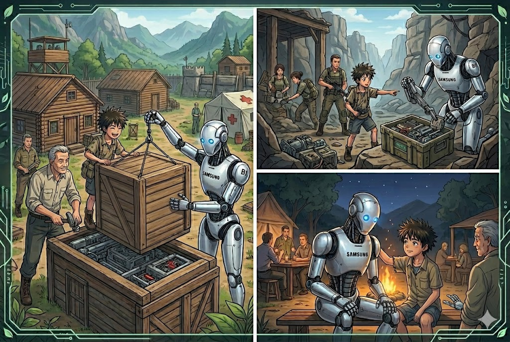

BIO apoya a toddos en el asentamiento con su moderno uso ayudo para construir cabañas ayudar a recuperar a los enfermos en el asentamiento e incluso fue seleccionado para comenzar peuqeñas misiones para conseguir recursos en los cuales sus habilidades como robot fueron demsiado utiles permitiendoles obtener recuersps de manera mas facil y sencilla, permitiendo que el tan esperado dia de contraatacar comience
0-125 al verlo ganarse la confianza de todos no tienne dudas du que es el mejor amigo que pudo havber conocido en este apocalipsis de las maquinas que muchos llamaban sin embargo esto solo fue el presagiio de que el final de todo se acercaba.
BIO comenzo a encariñarse con todos los sobrevivientes ahora el asentamiento se volvio su hogar, 0-125 al ver a BIO tan feliz le pregunta si se ubiera arrepentido de ir con el al asentamiento para lo cual BIO con emocion en su voz dijo que NO.
BIO:
De no ser porque tu me trajiste talvez me abria corrompido como el resto gracias por traerme y confiar en mi